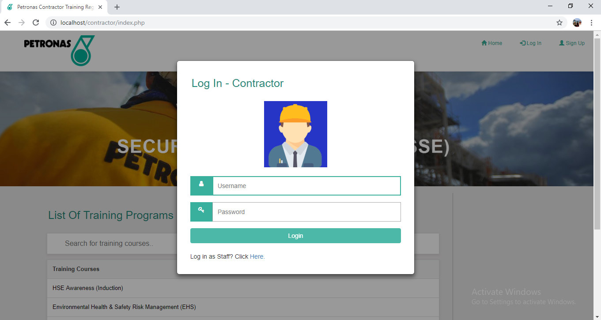
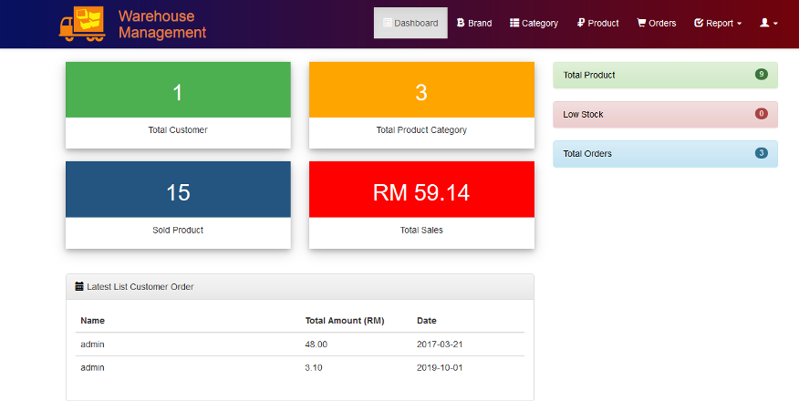
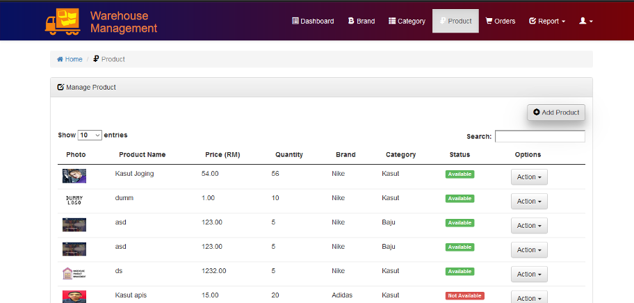
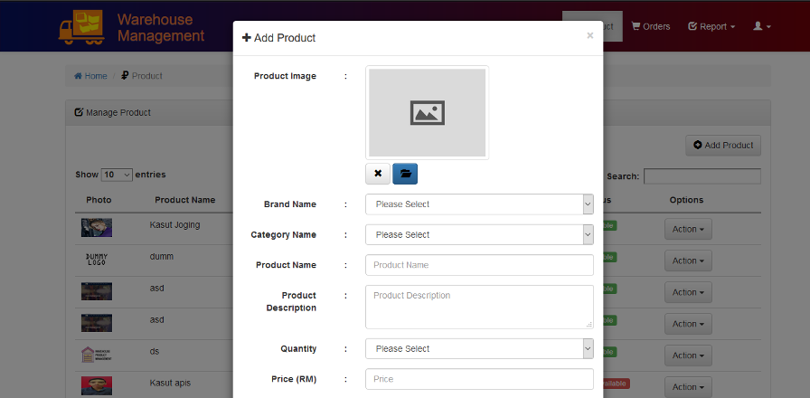
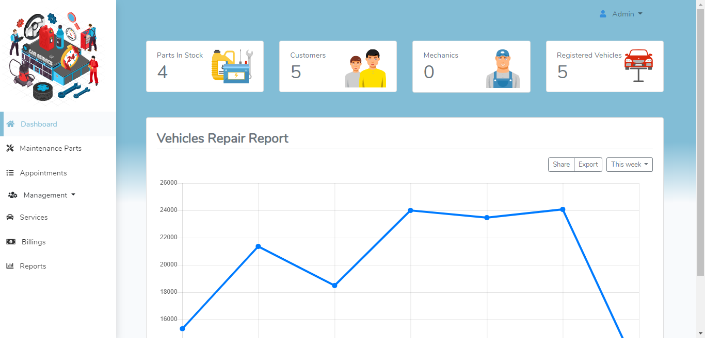
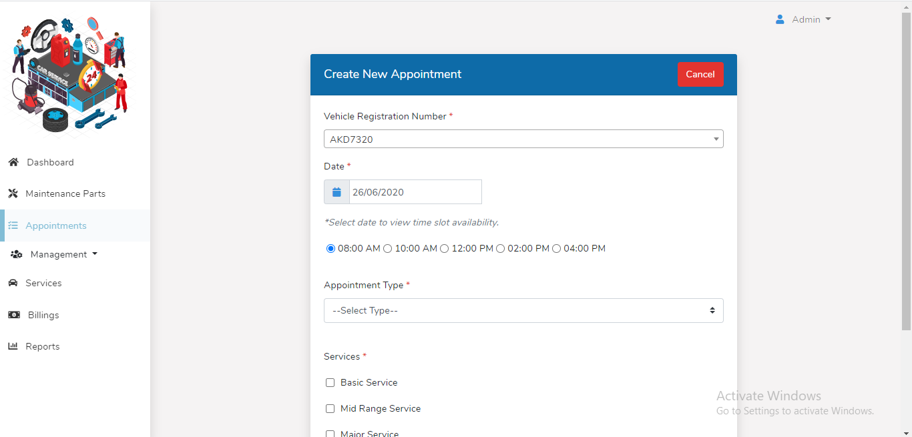
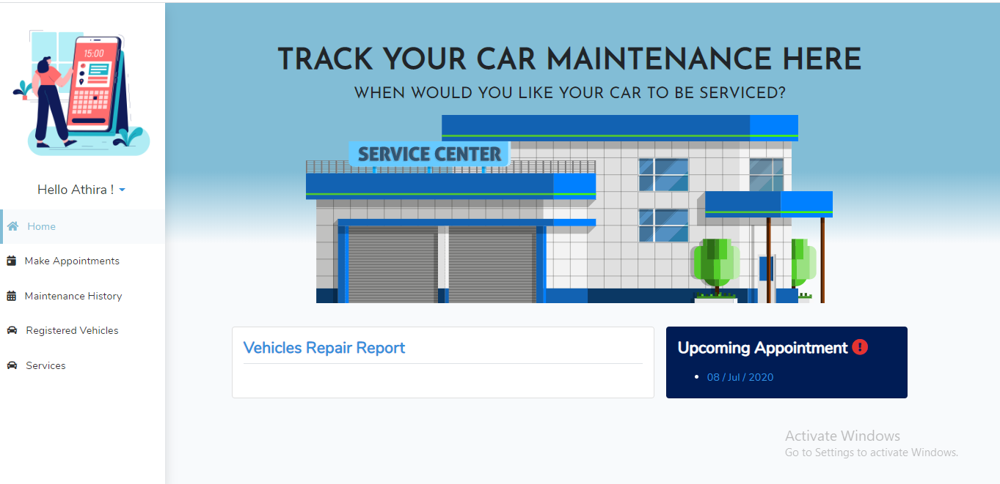
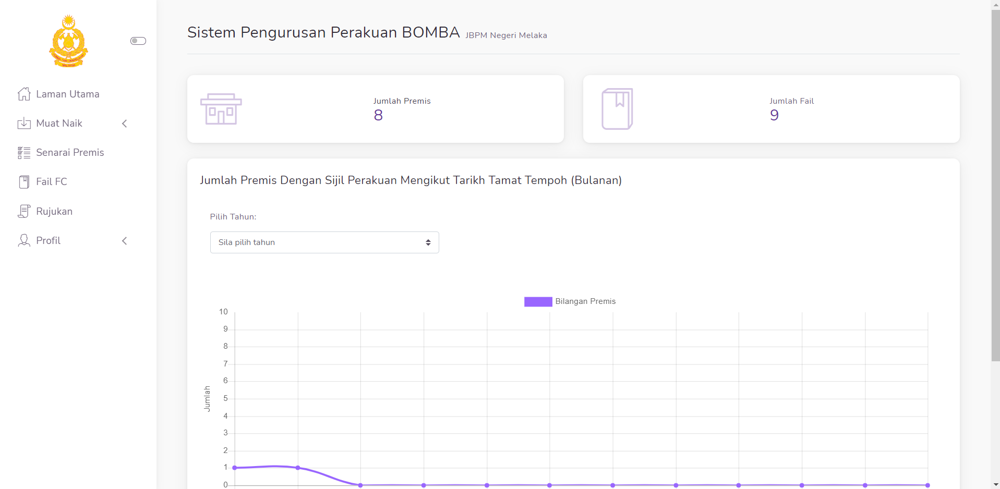
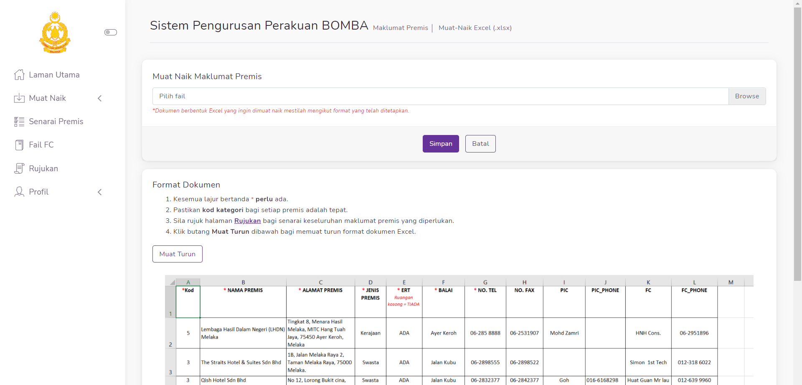
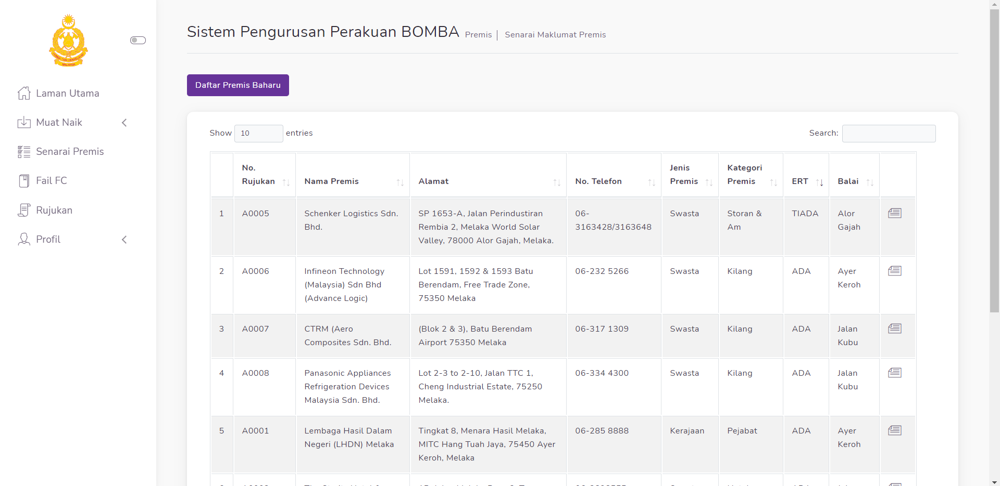

Projects
Below are among the projects that I've developed during my studies in my university.
Contractor Training Management System
Contractor Training Registration System is a software application focusing on the
contractor that will be
registering to the training courses related to Health, Safety & Environment (HSE) and which consist
of modules that includes process of insert, update, delete and search of data and reporting of
instructor-led-training programs.
The Contractor Training Registration System is designed and developed to assist contractors and
staffs to facilitate circumstance and to eliminate the problem of redundant
that increase the inefficiencies in data to be retrieved.



Among the interfaces in developed project.
Warehouse Stock Management System
Warehouse Stock Management is a sotware management system which staff can manage product
category, show sales report, track the parcel and use online payment. By this system, all the
constant flows
of the stocks product into and out of the existng stock product can be monitored effectvely. Among
the benefits
of having stock management system is it helps to reduce management costs, improve cash flow and
generates
sales report. Main focuses of this project is to setup database link from Oracle to MySQL.



Among the interfaces in developed project.
Automobile Service Center Management System
This project is a centralized system for day-to-day operation of an automobile service
center. To ensure a smooth operation of service center in order to reduce management cost and
increase profitability,
the Automobile Service Center Management System is proposed to be developed to support decision
making functions in business operation.
This project involves the functions of insert, update, delete and retrieve of data and business
logic
in error handling. A better decision making to increase profitability can also being gained from the
system with
the development of automatically
generated report based on the analysis of the performance of day-to-day operation.



Among the interfaces in developed project.
Fire Certificate System
This project is still an ongoing project in collaboration with Bahagian Keselamatan Kebakaran
Bomba Melaka in order to produce a system that helps to enhance the operation of managing the fire certificate for all premises in
Negeri Melaka. Among few features that have been developed in the system are bulk upload of premise details, automatic scheduled notifications
to notify the fire department officer regarding to the expiry date of fire certificate of the registered premises and many more to come. This project
has managed to win a silver award certificate in Jejak Inovasi UTeM 2020.



Among the interfaces in developed project.